Age-related decline in CD8+ tissue resident memory T cells compromises antitumor immunity
本次带来的是“CD8+ 组织驻留T细胞与年龄相关的下降损害抗肿瘤免疫力”论文的精读~
Abstract
Aging compromises antitumor immunity, but the underlying mechanisms remain elusive. Here, we report that aging impairs the generation of CD8+ tissue resident memory T (\(\rm{T_{RM}}\)) cells in nonlymphoid tissues in mice, thus compromising the antitumor activity of aged CD8+ T cells, which we also observed in human lung adenocarcinoma. We further identified that the apoptosis regulator BFAR was highly enriched in aged CD8+ T cells, in which BFAR suppressed cytokine-induced JAK2 signaling by activating JAK2 deubiquitination, thereby limiting downstream STAT1-mediated \(\rm{T_{RM}}\) reprogramming. Targeting BFAR either through Bfar knockout or treatment with our developed BFAR inhibitor, iBFAR2, rescued the antitumor activity of aged CD8+ T cells by restoring \(\rm{T_{RM}}\) in the tumor microenvironment, thus efficiently inhibiting tumor growth in aged CD8+ T cell transfer and anti-programmed cell death protein 1 (PD-1)-resistant mouse tumor models. Together, our findings establish BFAR-induced \(\rm{T_{RM}}\) restriction as a key mechanism causing aged CD8+ T cell dysfunction and highlight the translational potential of iBFAR2 in restoring antitumor activity in aged individuals or patients resistant to anti-PD-1 therapy.
论文导览
Aging impairs CD8+ TRM cell generation in NLTs.
组织驻留记忆T细胞(\(\rm{T_{RM}}\))是参与特异性免疫的一种淋巴细胞，其膜上特异性表达有CD103蛋白。研究人员发现，在衰老个体中的\(\rm{T_{RM}}\)数量相较于年轻个体的数量显著减少(1a, 1b)，并且有证据表明\(\rm{T_{RM}}\)在机体抗肿瘤免疫中发挥有重要作用。
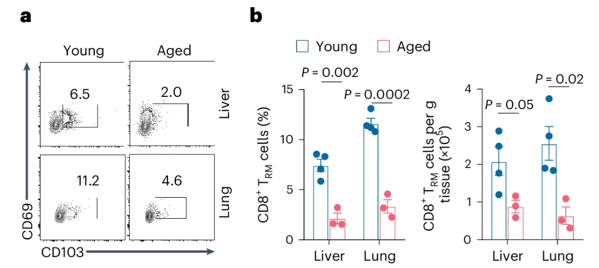
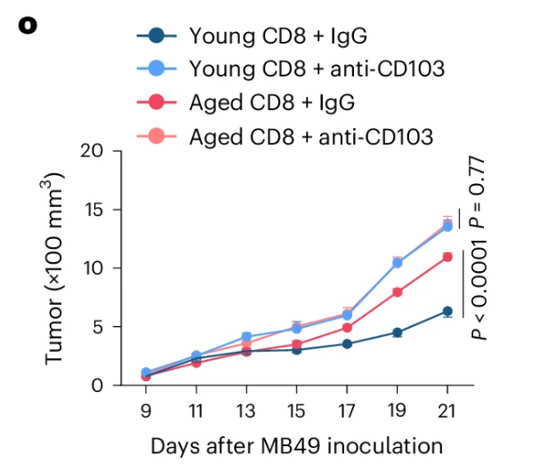
BFAR is upregulated in aged CD8+ T cells with diminished TRM subset.
已知衰老的Tc会导致对抗PD-1的免疫治疗无效，在比较了\(\rm{T_{RM}}\)和非\(\rm{T_{RM}}\)细胞之间的差异表达基因(DEG)后，将可能的基因与已知的编码泛素化调节酶的基因杂交，确定出了BFAR、XAF1、USP18三个重叠基因。
由于在针对PD-1治疗无反应的患者中，BFAR具有在\(\rm{CD8^+ T}\)细胞中表达上调，但是在\(\rm{CD8^+T_{RM}}\)细胞表达下降(2d)，且Bfar在老年荷瘤小鼠中脾脏与肿瘤处浸润的\(\rm{CD8^+ T}\)细胞中表达显著高于年轻个体的特点(2b)，研究者决定接下来重点研究BFAR在TME中对衰老\(\rm{CD8^+ T}\)细胞的调控作用。
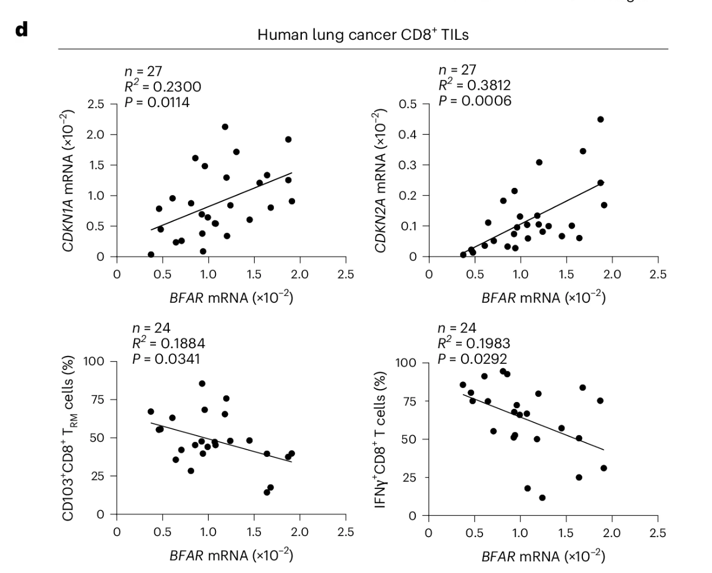
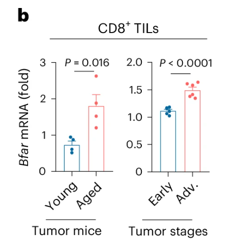
Note
更多有关于BFAR的信息，可以参阅此处。
BFAR deficiency restores the TRM subset to reinvigorate CD8+ T cell activity.
为了进一步验证BFAR对\(\rm{CD8^+ T_{RM}}\)细胞的调节功能，研究者将Bfar-floxed小鼠与CD8-Cre小鼠杂交，获得了条件性KO小鼠（\(\bf{\it{Bfar^{\rm{CD8-KO}}}}\)小鼠），使得其仅在\(\rm{CD8^+ T}\)细胞中缺失Bfar基因。
Note
Cre-loxP技术（Cre重组酶系统）是一种位点特异性重组技术，广泛应用于基因工程、分子生物学和遗传学研究中，尤其在构建基因修饰动物模型（如小鼠）时具有重要作用。
其基本的实验步骤如下：
- 将Cre酶插入特定启动子下（比如表达CD8的基因启动子下游）
- 在目的基因两端插入loxP位点（Cre酶的识别位点），转入小鼠细胞。
- 将Cre小鼠与Target Gene-floxed小鼠杂交，就可以在后代中获得特定位点被敲除的小鼠(\(\bf{\it{Bfar^{CD8-KO}}}\)小鼠)
更多有关信息，可以参考这篇文章.
研究者发现这个基因的缺失不影响T细胞的发育与分化，但是却显著增强了小鼠对肿瘤抵抗能力。对接种有MB49肿瘤细胞的野生组(WT)小鼠与\(\bf{\it{Bfar^{\rm{CD8-KO}}}}\)小鼠的\(\rm{CD8^+ T}\)细胞进行scRNA-seq测序分析，发现Bfar缺陷确实导致了TME中\(\rm{CD8^+T_{RM}}\)细胞亚群的增加。(3g, h)
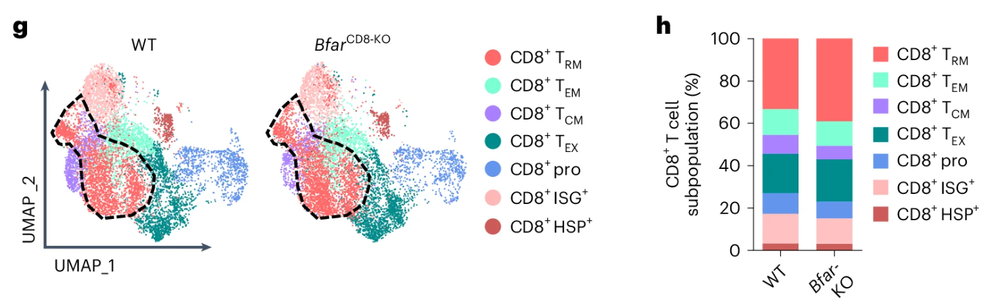
研究者又做了进一步的验证，发现与非\(\rm{CD8^+ T_{RM}}\)相比，\(\rm{CD8^+ T_{RM}}\)细胞亚群中与T细胞活化和细胞毒性相关的转录本富集，细胞毒性评分相比野生型更高(Fig.3j)。在\(\bf{\it{Bfar^{\rm{CD8-KO}}}}\)荷瘤小鼠的TME中，\(\rm{CD8^+ T_{RM}}\)细胞数量增加，产生\(\rm{IFN\gamma}\)的总\(\rm{CD8^+ T}\)细胞和\(\rm{T_{RM}}\)细胞增加(Fig.3m)。
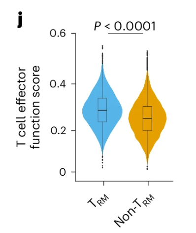
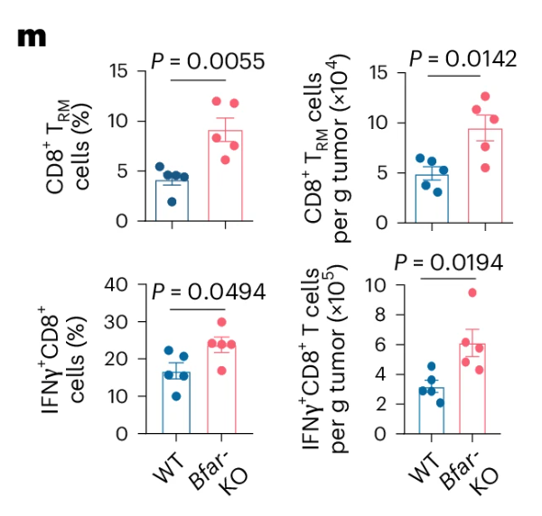
研究者还进行了一个更加巧妙的实验，通过抗\(CD103\)抗体消耗\(\rm{T_{RM}}\)细胞，发现肿瘤体积增大，产生\(\rm{INF\gamma}\)的\(\rm{CD8^+ T}\)细胞减少，消除了两组的肿瘤大小差距，证实了\(\rm{T_{RM}}\)细胞的重要作用！！(Fig.3n)
此外，BFAR缺陷显着恢复了肿瘤浸润的老年\(\rm{CD8^+ T}\)细胞产生\(\rm{T_{RM}}\)细胞和产生\(\rm{IFN\gamma}\)的能力(Fig.3o)。
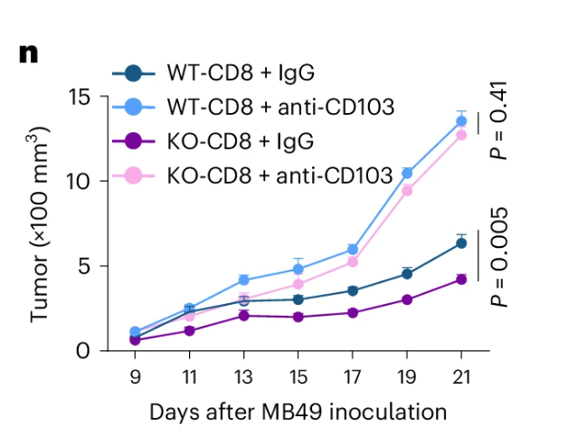
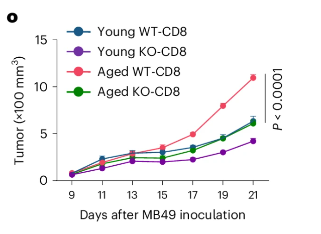
BFAR negatively regulates JAK2 signaling to restrain CD8+ TRM cells.
知道BFAR的显著效应后，自然想要知道它是如何\(\rm{CD8^+ T_{RM}}\)细胞的生成机制的，研究者借助scRNA-seq，通过KEGG Database分析，发现其与JAK-STAT与核因子-\(\bf{\kappa}\)B(\(\bf{\rm{NF-\kappa B}}\))信号通路重叠。(Fig.4a-c)
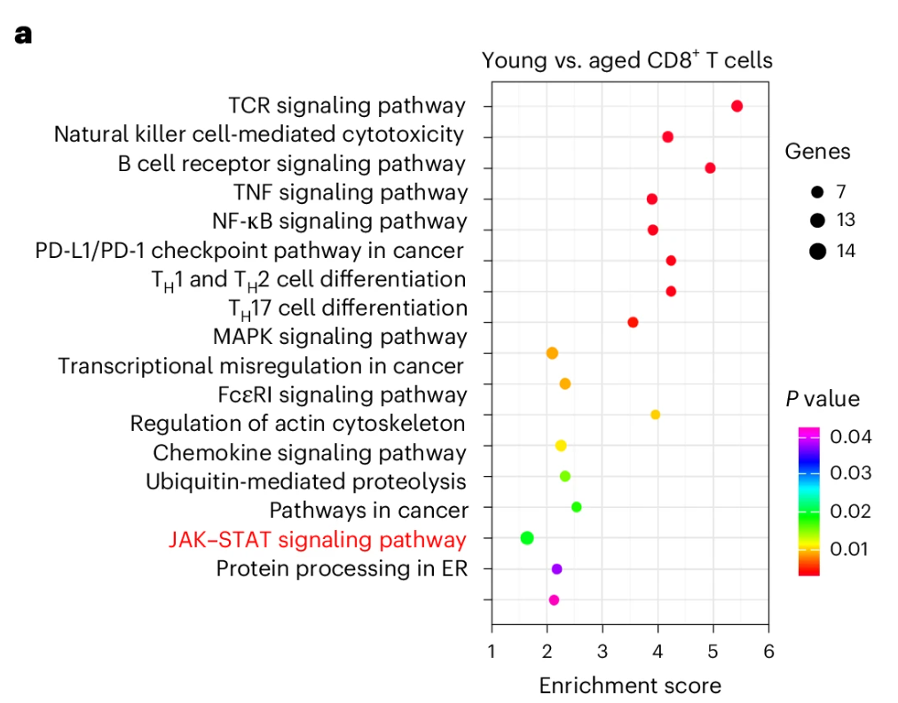
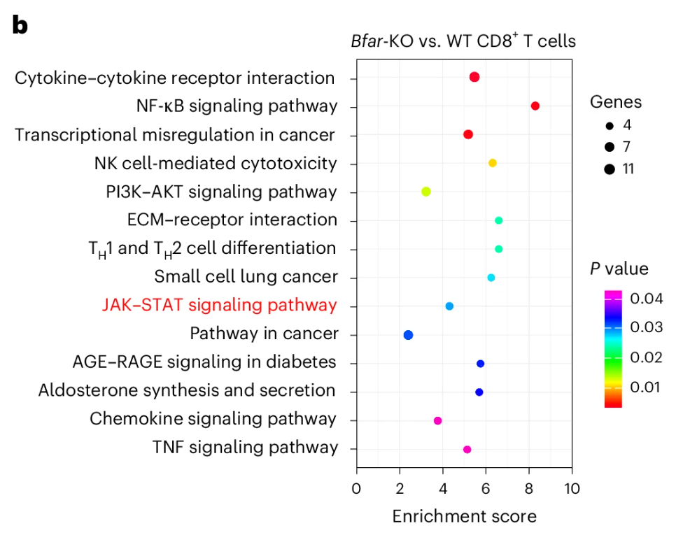
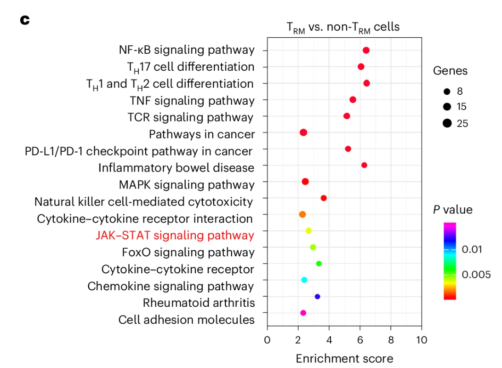
经过进一步的排查，发现与年轻T细胞相比，肿瘤浸润的衰老\(\rm{CD8^+ T}\)细胞显示出STAT1磷酸化受损，而BFAR缺陷促进了肿瘤浸润的\(\rm{CD8^+ T}\)细胞中STAT1的激活。(Fig.4d-g)
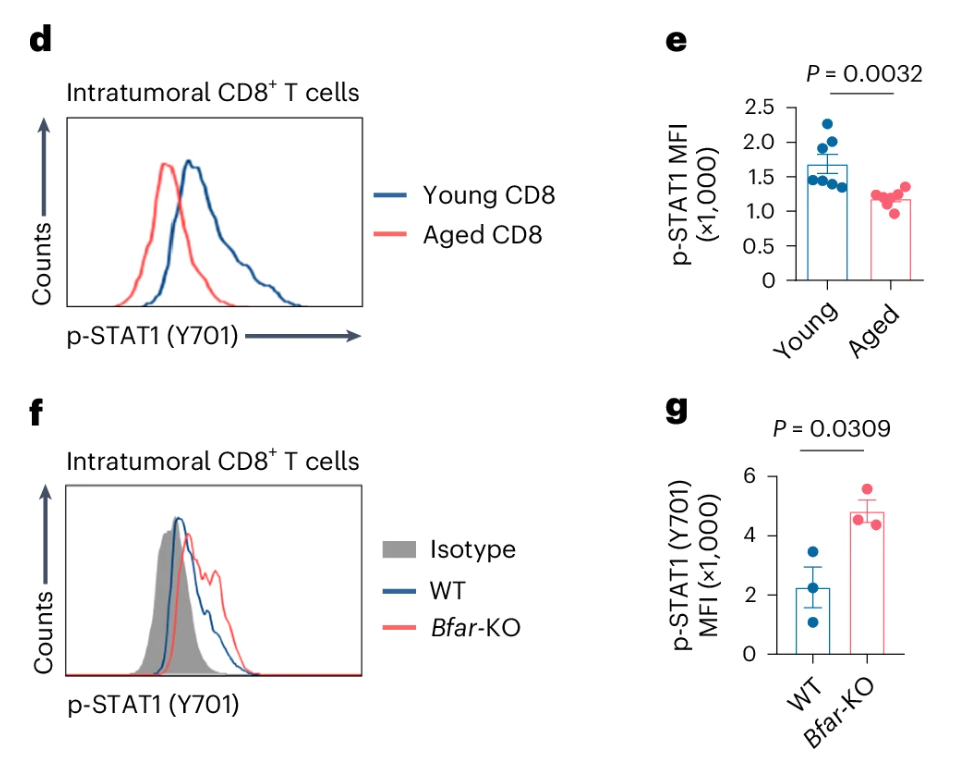
这些数据表明，衰老可能会损害通过BFAR的JAK-STAT信号传导，从而影响\(\bf{\rm{T_{RM}}}\)细胞的生成
鉴于JAK-STAT信号传导被多种细胞因子激活，研究者应用多种细胞因子来进行通路的激活实验，最终锁定了\(\rm{INF\gamma}\)诱导的JAK2->STAT1通路(Fig.4j)。
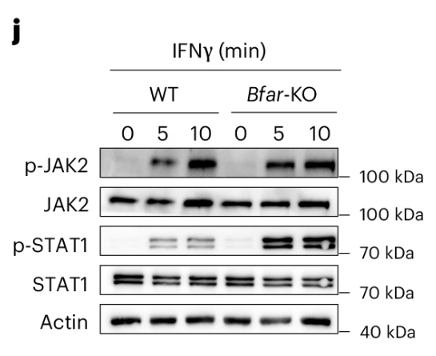
研究者同时补充实验，利用JAK2选择性抑制剂可以消除WT与\(\bf{\it{Bfar^{\rm{CD8-KO}}}}\)之间的\(\rm{CD8^+ T}\)细胞活化差异，证实了BFAR在JAK2下游信号传导的特异性作用。
在\(\rm{T_{RM}}\)分化条件下，激活的STAT1可以直接与 Cd103基因的启动子结合，而BFAR缺陷显著增加了STAT1与Cd103基因启动子的结合，从而可能增加分化的\(\rm{CD8^+ T_{RM}}\)细胞中Cd103基因的表达(Fig.4k)。
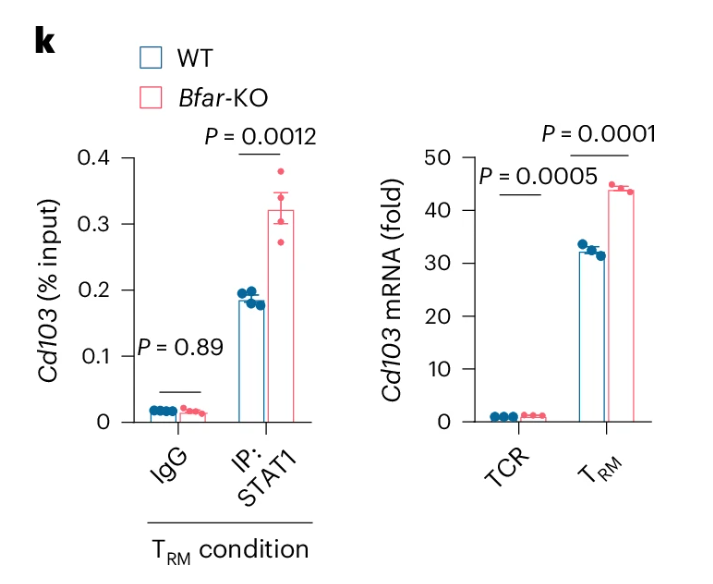
Note
IP：免疫沉淀
研究者在这里得出结论：BFAR负向调节JAK2信号传导以限制\(\rm{CD8^+ T_{RM}}\)细胞的产生，这可能导致衰老诱导的\(\rm{CD8^+ T_{RM}}\)细胞细胞下降
BFAR inhibits JAK2 ubiquitination
当发现BFAR可以阻断JAK2->STAT1通路，就需要进一步探究其中的机理是什么。研究者通过免疫共沉淀分析，发现BFAR确实与JAK2结合，但不与STAT1结合(Fig.5ab)。
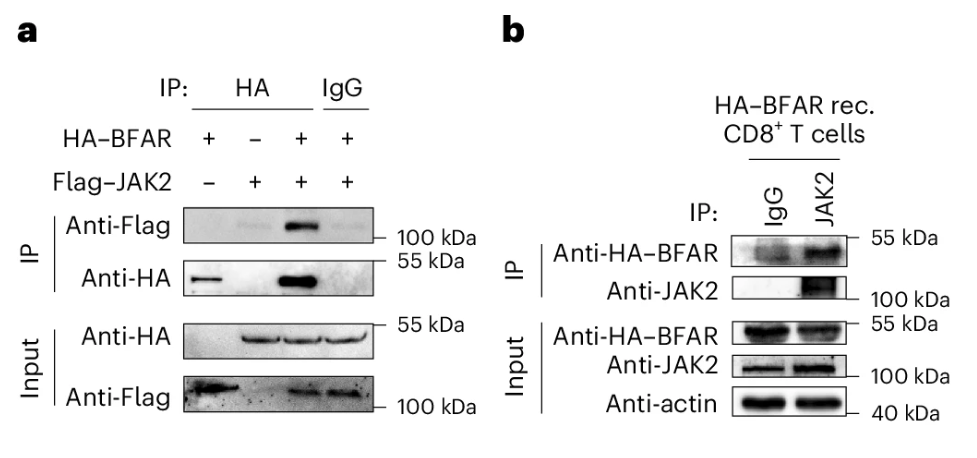
同时全长的BFAR表达具有强烈的JAK2去泛素化作用(Fig.2c)，与此一致，BFAR缺陷抑制了小鼠原代\(\bf{\rm{CD8^+ T}}\)细胞中的内源性JAK2去泛素化(Fig.2d)。
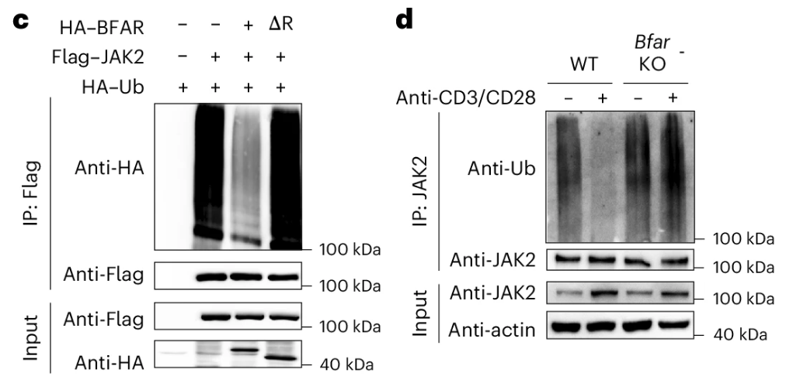
考虑到BFAR是一个E3泛素连接酶，而其表现的效应是JAK2去泛素化，研究者推测存在一种因泛素化而激活的去泛素化酶，催化JAK2去泛素化。
Note
E3泛素连接酶的功能是将E2泛素结合酶上的泛素分子连接到靶蛋白上，更多详情可以这篇文章.
研究者通过无偏倚质谱(unbaised MS)筛选出与JACK2结合的去泛素酶，得到了USP7、USP9X、USP39。再通过免疫共沉分析得到USP39不仅与BFAR结合，还与HEK293T细胞系中的JAK2相互作用(Fig.5fg)。此外，USP39过表达去除了JAK2的泛素化。
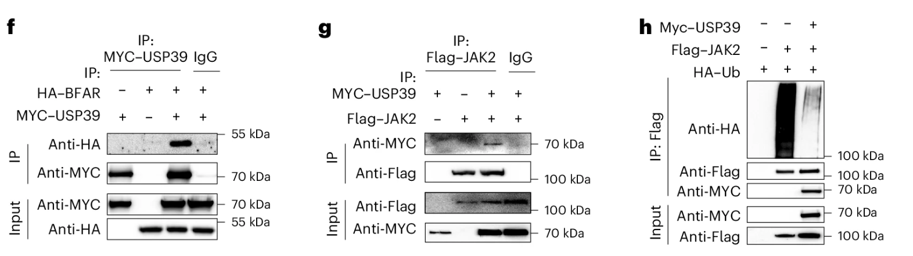
同时体外实验测定，bBFAR蛋白可以直接将聚泛素链与体外游离翻译的USP39蛋白偶联，表明BFAR是USP39的直接E3连接酶。
BFAR缺陷消除了内源性USP39泛素化，从而抑制了\(\rm{IFN\gamma}\)诱导的USP39与\(\rm{CD8^+ T}\)细胞中JAK2的结合，从而促进了JAK2和STAT1的结合。
此外，沉默Usp39导致类似于BFAR缺陷在促进BFAR完整T细胞中STAT1磷酸化和细胞活化的作用，但在BFAR缺陷型T细胞中则没有(Fig.8g-l)。
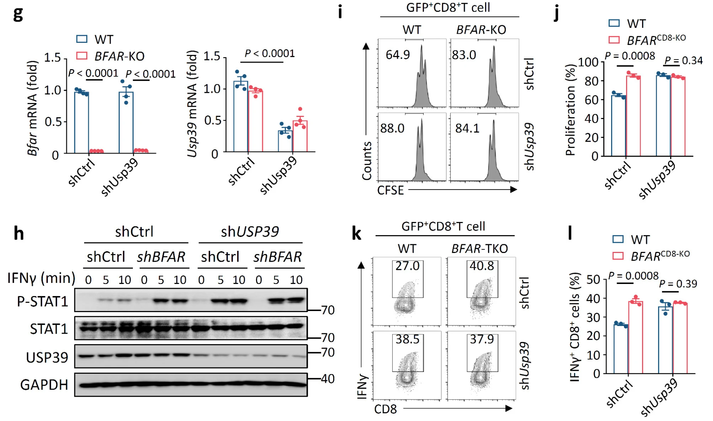
因此，这些结果表明，BFAR激活USP39以促进 JAK2去泛素化，从而抑制\(\rm{CD8^+ T}\)细胞中下游STAT1激活。
为了进一步证实以上结论，研究者培养了Bfar/Jak2-double-KO小鼠，发现了原先在BFAR缺陷下被\(IFN\gamma\)刺激后促进STAT1磷酸化的效应的消失，抗肿瘤免疫增强效应也消失了(Fig.5m-p)。
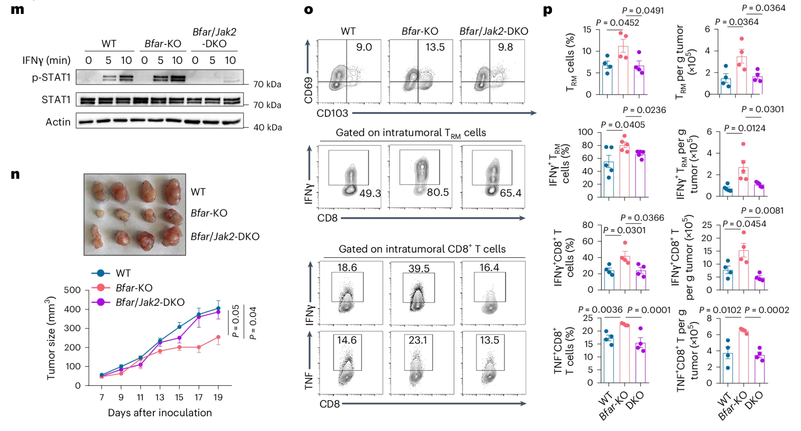
这些结果进一步证实，BFAR通过诱导JAK2去泛素化来抑制\(\rm{CD8^+ T_{RM}}\)细胞的生成。
A developed BFAR inhibitor restores the CD8+ TRM cell subset against solid tumors
做不动了，略
Targeting BFAR suppresses tumor growth in aged CD8+ T cell transfer and anti-PD-1-resistant models
做不动了，略
值得学的新东西
再说，累了